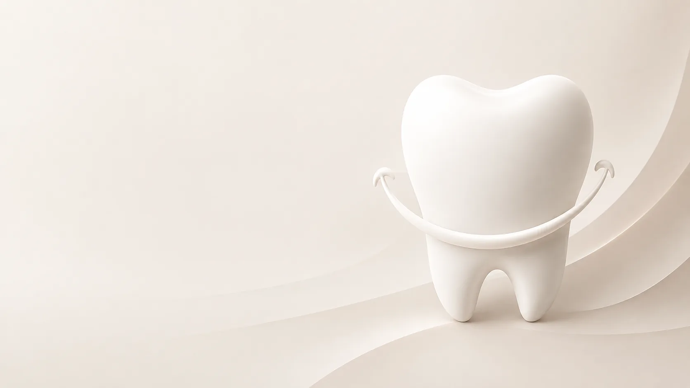

01
Консультация
Бесплатная консультация: осмотр, разговор о том, что беспокоит, и понятный план лечения со стоимостью.
Записаться ↗
Стоматология в Сургуте
Стоматология в Сургуте, где внимательно разбираются в ситуации и предлагают понятный план лечения.
30 лет Победы, 58 · кабинет 221 · Пн–Пт 09:00–19:00
Направления
На первом приёме осмотрим, объясним, что происходит, и предложим план. Стоимость и сроки называем до начала лечения.
Бесплатная консультация: осмотр, разговор о том, что беспокоит, и понятный план лечения со стоимостью.
Записаться ↗
Восстанавливаем форму и функцию зуба. Каждый шаг проговариваем заранее, без спешки.
Записаться ↗
Восстановление утраченных зубов. Варианты, сроки и цену обсуждаем до начала работы.
Узнать стоимость ↗Стоимость зависит от объёма лечения — врач назовёт её на консультации, до начала работы.
Есть противопоказания. Перед лечением нужна консультация специалиста.
О клинике
Здесь можно спокойно обсудить с врачом ситуацию, задать вопросы и понять, какое лечение действительно необходимо.
Сначала осмотр и понимание причины, затем — лечение.
Врач объяснит, что происходит, какие есть варианты и с чего лучше начать.
Без лишних процедур — лечение строится исходя из конкретной ситуации.
Документы
Приём ведёт ООО «Стоматологический кабинет Б. В. Кузнецова». Для налогового вычета и предоставления по месту работы документы подготавливаем по запросу.
Фотографии
Нажмите на фотографию, чтобы открыть её во весь экран.
Отзывы на Яндекс Картах и в 2ГИС
Долго выбирал клинику — остановился на кабинете Кузнецова. Спустя три года зубы стоят, нареканий нет.
Много лет прохожу здесь лечение и протезирование. Высокий профессионализм врача, внимательное отношение, вежливый администратор.
Я не ожидал, что увижу свою улыбку — ту самую, что была. А мне её вернули.
Как проходит визит
Расскажите, что беспокоит.
Администратор подберёт время в будни с 09:00 до 19:00.
Второй этаж, кабинет № 221. Возьмите паспорт, а если есть — прежние снимки.
Перед визитом
Позвоните по номеру +7 (3462) 50-10-15 в рабочие часы — администратор подберёт удобное время.
Стоимость зависит от состояния зубов, объёма лечения и выбранного метода. Точную стоимость врач определит после осмотра и составления плана лечения.
Да. На консультации врач проведёт осмотр, оценит состояние зубов и полости рта, ответит на вопросы и при необходимости предложит дальнейший план лечения.
Первичный приём обычно включает осмотр и обсуждение жалоб. При необходимости врач рекомендует дополнительную диагностику, после чего определяет дальнейшую тактику лечения.
Да, при острой боли лучше обратиться к стоматологу как можно раньше. Возможность приёма зависит от расписания врача, поэтому предварительно свяжитесь с клиникой.
Кариес желательно лечить на ранней стадии, не дожидаясь сильной боли. Чем раньше обнаружена проблема, тем меньше объём лечения обычно требуется.
Заранее делать снимок самостоятельно не обязательно. После осмотра врач определит, нужна ли дополнительная диагностика и какой именно снимок потребуется.
Протезирование может потребоваться при значительном разрушении или отсутствии зубов. Подходящий способ восстановления врач подбирает индивидуально после осмотра.
Да, для налогового вычета и предоставления по месту работы документы подготавливаем по запросу. Предупредите администратора при записи.
Кабинет на втором этаже, вход в здание — по ступеням, без пандуса. Позвоните заранее, если нужна помощь.
Как нас найти
2ГИС — оценки и отзывы
Открыть карточку и отзывы в 2ГИС ↗